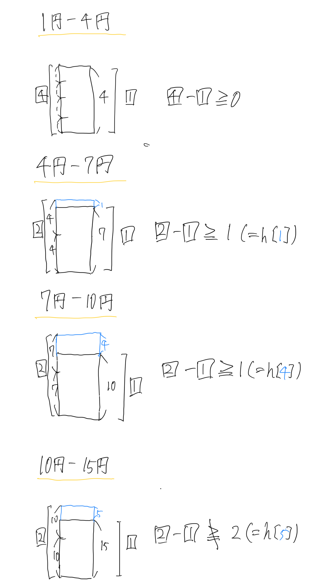

先日、ABC99のC問題を解いたのですが、これがまあ苦戦しました。
最初、持っているお金の中から1番残りの額に近いお金をどんどん選んでいくという貪欲法で行けると思ったのですが、結論から言うとこれはダメでした。(やはり未証明の貪欲法はコワイ)
しかし、日本のお金(1円, 5円, 10円, 50円, 100円, 500円, 1000円, 5000円, 10000円)に関しては直感的に貪欲法でOKな気がします。
ではどのような場合は貪欲法が使えて、どのような場合は使えないのでしょうか。
結論から言うと、{a[i] ... i番目のお金の額面、任意のi, j(i < j)について(a[i] < a[j])}としたときに、
a[j + 1] = p * a[j] - δ (ただし、0 <= δ < a[j]) ...[式1]
としたときに、pとδは一意に求まります。このpとδについて、{h[x] ... x円を支払う場合に貪欲法を用いて求めたお金の最小個数} とすると、
p - 1 >= h[δ] ...[式2]
が全てのjについて成り立つことが貪欲法が使える条件です。
この文面だけを見ても、何故そうなのかどころか何を言っているのかすら分かりづらいので、図を使いながら説明していきます。
まずこの式の意味について説明します。
例として、1円、4円、7円、10円、15円を用意します。(a[0] = 1, a[1] = 4, a[2] = 7, a[3] = 10, a[4] = 15)
まず、1円と4円の関係について先ほどの式に当てはめていきます。
4 = 4 * 1 - 0
赤字がp、青字がδです。これを式2に代入します。
(4 - 1 = ) 3 >= 0 (= h[δ] = h[0])
成り立っていることが分かります。よってお金が1円と4円だけの場合、貪欲法によって解くことが最適であると分かります。(理由は後述)
同じ手順で他のお金についても式にあてはめます。
7 = 2 * 4 - 1
(2 - 1 = ) 1 >= 1 ( = h[1]) ...OK
10 = 2 * 7 - 4
(2 - 1 = ) 1 >= 1 ( = h[4]) ...OK
15 = 2 * 10 - 5
(2 - 1 = ) 1 >≠ 2 ( = h[5]) ...NG!
10円-15円の関係のみ式が成り立ちませんでした。
ここで、もう1度貪欲法の意味について考えてみます。
「このお金の組み合わせなら貪欲法が最適解法になる」とは「全ての数について、貪欲法が最適になる」ということです。
言い換えれば、「ある数について貪欲法が最適でない」とき、そのお金の組み合わせは貪欲法によるお釣り生成ができないと言うことです。逆にそのような数が存在しないとき、貪欲法が使用できると言えます。
そして先ほどの式1, 式2はその「ある数」を探す操作に他なりません。
貪欲法が最適でない、とは、「1番残りの金額に近いお金以外を使ったほうが最終的な合計枚数が少なくなる」ケースがあるときです。
そのケースが起こる可能性があるのが、式1、式2の時なのです。
上の画像は式1, 式2を図式化したものです。このようにした時に、全ての場合について「左の個数 - 1 >= 右の青部分の貪欲法を用いた最小個数」となっているのが貪欲法が最適である条件です。
この条件を満たさないとき、すなわち左の方が枚数が少ないとき、これは「1番残りの金額に近いお金以外を使ったほうが合計枚数が少なくなる」ということになります。
今回の貪欲法の反例である10-15円について見てみます。
20円を作るとき、15円を用いる(貪欲法)と15円、4円、1円の3枚を使います。しかし1個下の10円を使うと、10円 * 2 = 20円で、2枚で済んでしまう事がわかります。よって、このお金の組み合わせでは貪欲法は使えません。
なんとなく式の意味が理解できたと思います。では次に本当に日本のお金は貪欲法が最適なのかについて考えてみます。
実はこれは計算をするまでもなく自明です。
日本のお金を小さい順にソートしたとき、全てのお金についてa[i + 1] % a[i] = 0、つまり隣り合うお金は割り切れる関係にあるからです。したがって式2のh[δ] = h[0] = 0となり、p - 1を計算するまでもなく条件を満たしているのがわかります。
では2000円札を入れた場合どうでしょうか?
5000 = 3 * 2000 - 1000
(3 - 1 = ) 2 >= 1 ( = h[1000]) ...OK
大丈夫ですね。実は日本に限らず、世界のほぼ全ての貨幣は貪欲法が用いられるような組み合わせになっています。
というわけでおつり生成問題における貪欲法で解けるための条件の解説でした。なんとなく分かってもらえれば幸いです。
参考資料
https://qiita.com/s417-lama/items/0cdd95fddb2067876896